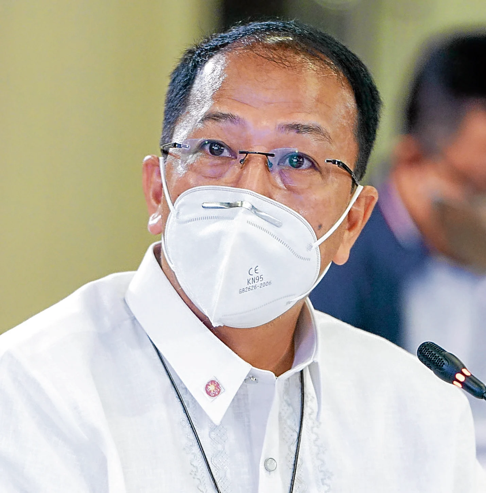

Vaccine czar to LGUs: Rush use of 38M doses
By: Dexter Cabalza - Reporter / @dexcabalzaINQPhilippine Daily Inquirer / 05:30 AM October 30, 2021
{kind=link}
Carlito Galvez Jr.—MALACAÑANG PHOTO
MANILA, Philippines — With the arrival of more COVID-19 vaccines, the National Task Force Against COVID-19 (NTF) on Friday urged local governments across the country to be “creative and flexible” in speeding up their vaccination drives and go house-to-house to give the jabs if they have to.
NTF chief implementer Secretary Carlito Galvez Jr. said that as of Thursday, the country had 38 million doses of various brands of vaccines ready for distribution.
He said 8 million were in national warehouses and 30 million in regional storage facilities. They have a shelf life of six months, he said.
“We look forward to seeing each and every LGU (local government unit) in the country hitting their daily jab targets in the days ahead, as we collectively work toward reaching and sustaining the 1.5 million jab rate that we hope to achieve within this quarter,” Galvez said Thursday night as he received 976,950 doses of Pfizer vaccine procured by the government.
He said he expected that by November the government would have reduced its storage inventory to “at least 20 million doses.”
In a statement on Friday, the NTF directed LGUs to conduct house-to-house vaccinations in their localities “to ramp up their daily vaccination rates.”
Galvez acknowledged several problems hampering the faster deployment of the vaccines, particularly to places outside Metro Manila.
One reason for the slow pace of distribution of the shots was that some localities are unable to commit to a specific number of jabs within the limited period of the vaccines’ viability and efficacy as they did not have the necessary cold storage facilities, he said.
Highly sensitive vaccines brands, such as Pfizer, Moderna, and Gamaleya’s Sputnik V, require subzero temperature storage.
“Most of our municipalities don’t have some sort of stable electricity in their areas. And considering that these vaccines need a storage with stable power supply, the problem is that we will have to plan these just-in-time deliveries,” Galvez said, referring to the process of distributing a specific number of vaccines that could only be administered immediately.
There was also a high rate of vaccine hesitance in areas that were considered low-risk for COVID-19, he said.
“Those factors make certain municipalities lack the confidence to handle these vaccines,” Galvez said.
The independent pandemic monitor Octa Research group said the challenge for the government now was how to avoid wasting the shots.
“Now that the struggle has moved from supply to logistics, how do we optimize deployment [of vaccines] in the provinces,” Octa fellow and University of the Philippines professor Ranjit Rye, told the Inquirer.
“We need to have a significant portion of our population beyond NCR (National Capital Region) vaccinated … but not every region is as endowed as NCR in terms of facilities and technical manpower to deploy vaccines,” he said.
Rye said the government needed to scale up its information drive to reduce the resistance from some Filipinos to the vaccine.
Lack of information
A Sept. 11 to Sept. 16 OCTA survey showed that among those who refused to get jabbed, 65 percent cited uncertainty over the safety of the shots as the main reason.The survey said 77 percent of people in Metro Manila and 78 percent in the rest of Luzon outside the capital cited their refusal to be vaccinated for the same reason. In Mindanao, it was 73 percent. Only the Visayas registered a low rate of 33 percent.
“A lot of people are hesitant and it’s largely an issue of lack of information. A lot of people in the provinces still have vaccine hesitancy largely because they are not informed,” Rye said.
Andrew Morris, Unicef chief field officer for Mindanao, said “refusal and hesitancy are really major concerns” in the Bangsamoro Autonomous Region in Muslim Mindanao (BARMM).
As of Oct. 18, only 6.63 percent of the people in the BARMM have been fully vaccinated, the lowest number nationwide.
Only NCR has fully vaccinated more than half of its population (56.55 percent) while the other regions reported less than 25 percent, according to computations by the Inquirer based on data from the NTF as of Oct. 18 and official population projections for 2021. In addition to the BARMM, the other regions at the bottom were Mimaropa (12.84 percent) Soccsksargen (12.02 percent), and Bicol (11.78 percent).
The government releases vaccination figures based on the target, not the total population, which results in figures that are different from the Inquirer’s.
Misinformation concerns
On Oct. 19, the BARMM, Unicef, and the UK government launched a project to improve vaccine acceptance and overcome vaccine hesitancy in the region by addressing “misinformation concerns,” said Chief Minister Ahod Ebrahim.The Bangsamoro Information Office also cited the lack of manpower for data management, late reports due to internet connectivity problems, the lack of doctors in some rural health units and preference for certain brands of vaccine for the low vaccination rate.
Daily target
Galvez said the goal of the 1.5 million target doses per day was the full vaccination of at least 50 percent of the country’s more than 110 million population by the end of the year.Based on the data from NTF as of Oct. 28, the average daily doses in the previous seven days was 538,289. The highest number of jabs administered in a day was 724,294 recorded on Oct. 22.
Galvez was confident the country could achieve the new daily target once the inoculation of 12-year-olds to 17-year-olds picked up its pace by next month.
A total of 58,212,187 COVID-19 doses have been administered as of Oct. 28. More than 26.8 million Filipinos, or around 24 percent of the country’s total population, had been fully vaccinated. Over 31 million had already received the first dose. —WITH REPORTs FROM KATHLEEN DE VILLA, RYAN ROSAURO AND INQUIRER RESEARCH